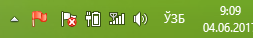
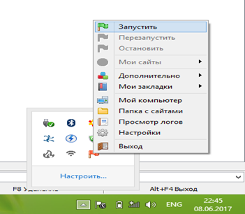
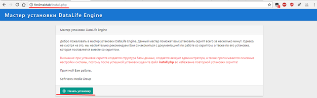
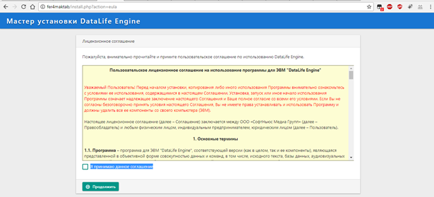
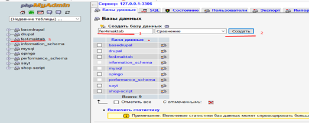
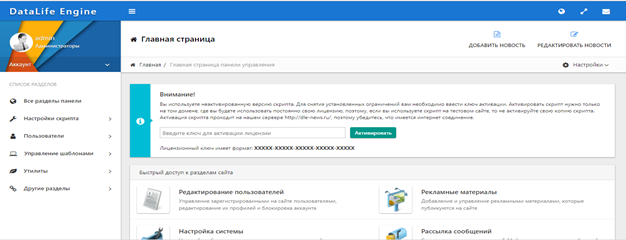
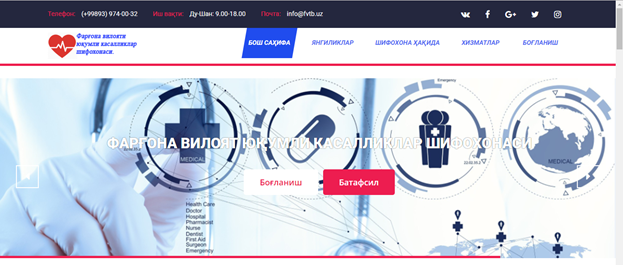
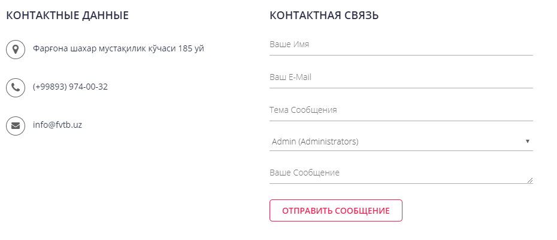

Project Overview
DataLife Engine (DLE) is a multi-functional content management system designed primarily for news portals and blogs. It is developed using PHP and MySQL, making it a robust solution for managing content-heavy websites with ease.
Key Features of DLE:
- MySQL Database Support: Efficient storage and retrieval of data.
- AJAX Technology: Enhances user experience by reducing page reloads.
- Advanced Security System: Protects against common web vulnerabilities.
- Flexible Template System: Allows independent design and layout customization.
- SEO Friendly: Supports CNC (human-readable URLs) for better search engine indexing.
- User Management: Extensive capabilities for user registration, roles, and permissions.
- Content Management: Easy creation, editing, and publishing of news and articles.
- RSS Support: Import and export news feeds.
- Banner Management: Control over ad placements and banners.
Installation Instructions
Prerequisites
- Open Server: Required for running the local server environment.
- DataLife Engine: The core CMS files.
Steps to Install
- Download and Install Open Server:
- Visit Open Server and download the installer.
- Install Open Server on your preferred disk.
- Set Up Project Directory:
- Navigate to the
Open Serverdirectory on your disk. - Inside the
domainsfolder, create a new directory namedfer4maktab. - Download DataLife Engine files from DLE Demo.
- Extract the DLE files into the
fer4maktabdirectory.
- Navigate to the
- Start Open Server:
- Run
Open Server x64orOpen Server x86based on your system architecture. - Start the server by clicking on the
zapustitьbutton in the Open Server interface.
- Run
- Configure DLE:
- Open a web browser and go to
http://127.0.0.1/openserver/phpmyadmin/index.php. - Create a new MySQL database for your project.
- Access
http://127.0.0.1/fer4maktaband follow the installation wizard. - Enter the database credentials when prompted.
- Open a web browser and go to
- Complete Installation:
- Follow the steps in the installation wizard to complete the setup.
- Log in to the admin panel using the credentials you set during the installation.
Directory Structure
fer4maktab/
├── admin.php
├── index.php
├── templates/
│ ├── default/
│ │ ├── main.tpl
│ │ ├── header.tpl
│ │ ├── footer.tpl
│ │ └── ...
│ └── ...
├── engine/
│ ├── classes/
│ ├── data/
│ ├── modules/
│ ├── ...
└── ...
Project Usage
Admin Panel
Access the admin panel at http://127.0.0.1/fer4maktab/admin.php. Use the admin panel to manage content, users, and settings. Create new articles, manage comments, and configure site settings from the intuitive interface.
User Interface
Users can register, log in, and participate in the website activities. Comment on articles, rate news, and interact with the content. Upload and manage media files directly from the website.
Additional Resources
Conclusion
This project showcases the use of DataLife Engine CMS to build a fully functional news portal. The documentation provided here should help you set up and manage your DLE-based website efficiently. For any questions or further assistance, please refer to the official documentation or contact the project maintainer.
License
This project is licensed under the MIT License - see the LICENSE.md file for details.
Images
Below are some screenshots illustrating the project setup and usage:

Open Server Icons
Open Server Auto-Load Icon
Open Server Interface
Datalife Engine Installation Start
License Agreement
MySQL Server Access Data
Admin panel of website
Homepage of website
Contact page of website